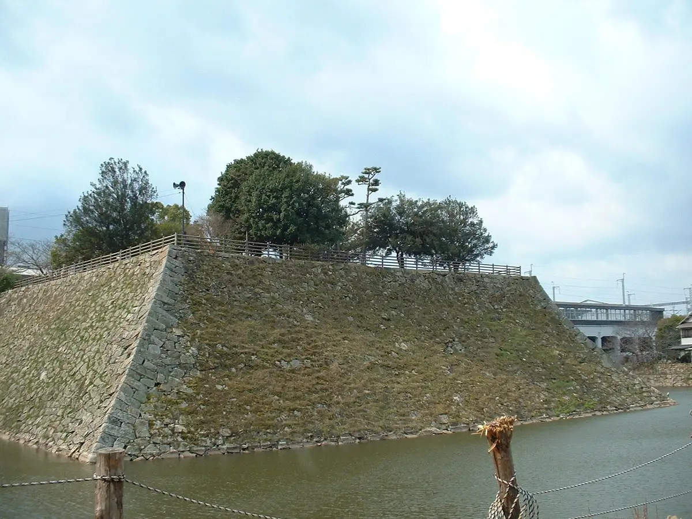
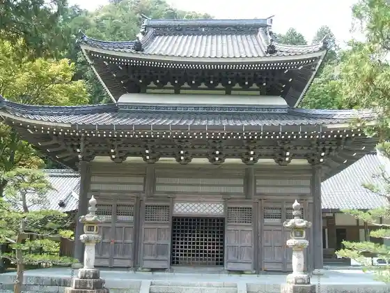
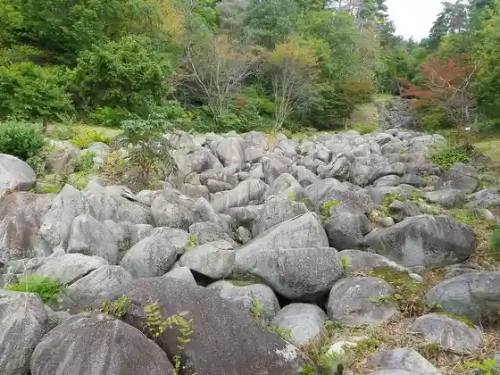
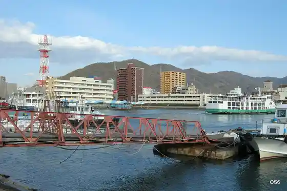

Mihara
Mihara · Hiroshima
Mihara
Highlighted on the Hiroshima map.

Stay
Hotel Rutoin Mihara Ekimae
Ribumakkusu Resort Mihara Onsen Shiifuronto
Hiroshima Eapoto Hotel
Tennen Onsen (Ukishiro Baths) Supa Hotel Mihara Ekimae
Hotel Hakuryu Mizumi Resort
HOTEL AZ Hiroshima Mihara Mise
Mihara Suteshon Hotel
Mihara Shitei Hotel
Mihara Kokusai Hotel
Dining
Ya Dai Zushi Mihara Ekimae Town
Bisutoro Sobo
O Konomi Yaki Tokugawa Mihara Mise
Kuimo no Ya Wan Mihara Ekimae Mise
ACERO
Gennaoshi
Rakushoku Raku Don Tsugi Ho
Gurandoru
Yakiniku Sakaba Niku
Hama Be Mihara Ekimae Mise
Yogan Yaki Nagomi
ZONA FORTUNATO
no.503
RESTAURANT YOGANSU
Oka Ta
Yassa Manju Honpo
Onsen
Hotel Rutoin Mihara Ekimae Public Bath
Ribumakkusu Resort Mihara Onsen Shiifuronto Public Bath
Tennen Onsen (Ukishiro Baths) Supa Hotel Mihara Ekimae Public Bath
Hotel Hakuryu Mizumi Resort Public Bath
Sights
Mihara Castle Ruins
Hotoke Tori Tera

Kui Iwa Umi

Mihara Naiko

Sunami Minato